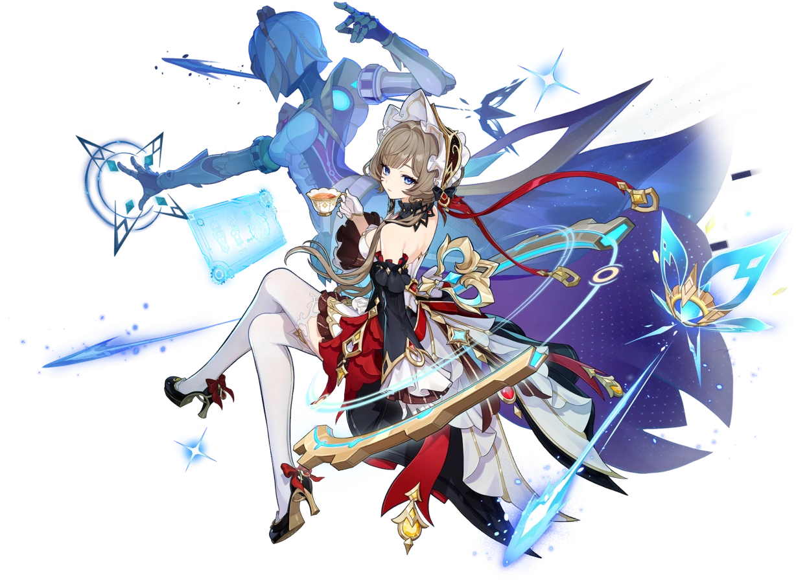

Марионетка, номер семь из Предвестников Фатуи. Утончённая леди, которая постигает мир математикой, логикой и никогда не пропускает чаепития.

Сандроне — «Марионетка», номер семь из Предвестников Фатуи.
Утончённая леди, которая постигает мир математикой и логикой, и никогда не пропускает чаепития. Её созвездие — Зазеркальный Механизм.